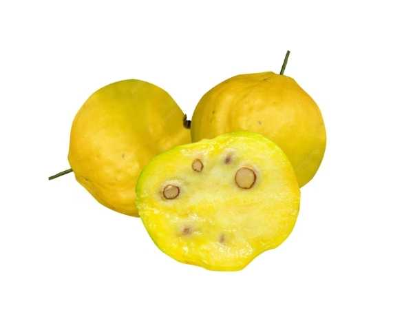

Eugenia stipitata
Common Names: Araza Boi, Araçá-boi, Araza, Guayaba Amazónica
Local Name: Araçá-boi (Portuguese), Arazá (Spanish)
Family: Myrtaceae
Origin: Western Amazon Basin (Peru, Brazil, Ecuador, Colombia)
Plant Type: Perennial evergreen shrub to small tree
Variety: E. stipitata subsp. sororia (larger fruit)
Average Lifespan: 20–30 years
| Growth Habit | Compact shrub to small tree; bushy with multiple stems |
| Plant Size | 2–5 meters tall |
| Leaves | Opposite, elliptic, 8–18 cm long, dark green, aromatic when crushed |
| Flowers | White, 4-petaled, 1.5–2 cm across, borne singly or in small clusters in leaf axils |
| Flower Characteristics | Fragrant; numerous white stamens; attract bees |
| Fruit | Round to oblate, 4–12 cm diameter, soft acidic pulp, highly aromatic |
| Fruit Color | Green turning bright yellow when ripe |
| Seed Characteristics | 2–10 flat seeds per fruit; recalcitrant (short viability) |
| Root System | Shallow fibrous root system |
| Climate | Tropical lowland; humid equatorial; frost-intolerant |
| Temperature Range | 22–32°C ideal; does not tolerate temperatures below 10°C |
| Rainfall Requirement | 2000–3500 mm annually; high humidity essential |
| Soil Type | Acidic, well-drained, rich in organic matter; tolerates poor Amazonian soils |
| Soil pH Preference | 4.5–6.0 (acidic) |
| Sun Requirement | Full sun to partial shade; tolerates some shade when young |
| Spacing | 3–5 meters between plants |
| Irrigation Method | Regular watering; drip irrigation in dry periods |
| Water Requirement | High; requires consistent moisture |
| Can it Grow in Pots? | Yes, in large containers (30+ liters) with consistent watering |
| Fertilizer Schedule | Every 2–3 months during growing season |
| Recommended Organic Fertilizers | Compost, vermicompost, bone meal, fish emulsion |
| Pesticide Frequency | Minimal; generally pest-resistant |
| Recommended Organic Pesticides | Neem oil, insecticidal soap |
| Mulching Practice | Thick organic mulch to retain moisture and mimic forest floor |
| Training System | Natural bushy form; can be trained as single-trunk small tree |
| Pruning Time | After harvest; shape as needed |
| How to Prune | Remove crossing branches; maintain open centre for air flow |
| Common Pests | Fruit fly, scale insects (minimal) |
| Common Diseases | Anthracnose, root rot in waterlogged soil |
| Disease Prevention & Remedies | Good drainage, avoid waterlogging, remove fallen fruit |
| Flowering Months | Year-round in tropics; peaks during rainy season |
| Fruiting Season | Year-round with peaks; continuous production in ideal conditions |
| Days to Harvest | 60–90 days from flowering |
| Harvest Indicators | Fruit turns bright yellow, softens, strong aromatic scent |
| Average Yield per Plant | 20–40 kg per plant per year |
| Pollination Type | Self-pollination and insect pollination |
| Pollination Notes | Self-fertile; bees improve fruit set and size |
| Pollination Details | Self-fertile; stingless bees are important pollinators in native habitat |
| Propagation by Seeds | Fresh seeds germinate in 15–30 days; must be sown immediately; seedlings fruit in 3–4 years |
| Propagation by Cuttings | Semi-hardwood cuttings with rooting hormone; moderate success rate |
| Propagation by Grafting | Grafting on Eugenia rootstock for improved varieties |
| Water Usage | Moderate to high; adapted to high-rainfall environments |
| Soil Conservation Practices | Suitable for agroforestry; helps rehabilitate degraded Amazonian soils |
| Organic Practices Used | Minimal inputs; grows well in agroforestry systems |
| Companion Plants | Cacao, açaí, cupuaçu, other Amazonian species |
| Biodiversity Benefits | Supports Amazonian pollinators; fruit eaten by wildlife |
| Commercial Production Regions | Peru, Brazil (Amazonas), Ecuador, Colombia |
| Market Uses | Pulp for juice, ice cream, sorbet |
| Processing Uses | Frozen pulp, juice concentrate, jam, ice cream flavouring |
| Market Value (Approx.) | R$5–15 per kg (Brazil); growing demand for exotic fruit pulp |
| Symbolism | Represents Amazonian biodiversity and sustainable agroforestry |
| Traditional Uses | Fruit pulp used in traditional Amazonian beverages; indigenous communities cultivate it in home gardens |
| Calories | 28 kcal per 100g |
| Dietary Fiber | 1.2 g per 100g |
| Vitamin C | 7–10 mg per 100g |
| Vitamin A | Moderate (as carotenoids) |
| Iron | 0.4 mg per 100g |
| Potassium | 120 mg per 100g |
| Antioxidants | Rich in polyphenols, carotenoids, and volatile aromatic compounds |
| Other Key Nutrients | Calcium, phosphorus, organic acids (citric, malic) |
| Anxiety & Sleep | Not documented |
| Immune Support | Vitamin C and antioxidants support immunity |
| Anti-inflammatory Properties | Polyphenol content provides anti-inflammatory benefits |
| Heart Health | Low calorie, antioxidant-rich fruit supports heart health |
| Digestive Health | Acidic pulp aids digestion; fiber supports gut health |
Disclaimer: Information provided is for educational purposes only and not a substitute for medical advice.
Add your field observations here.